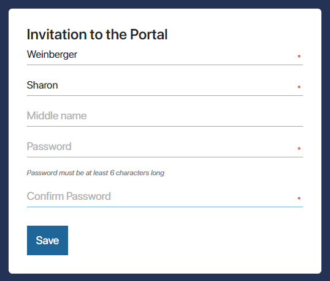
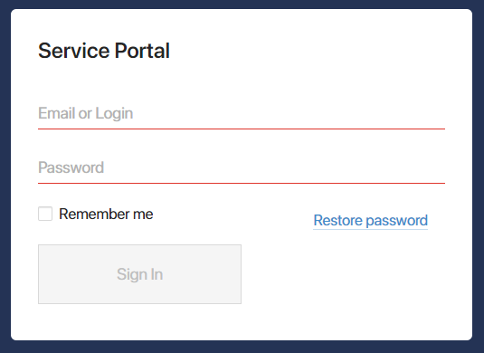

Registration
For a user to access the portal and its pages, the administrator has to invite them by sending an invitation link. If SAML integration or authentication via an external service with automatic registration is enabled, there is no need to send an invitation link. It is enough to provide the user with a link to the portal page.
After clicking on the invitation link, the user will see the registration page, which can be customized if needed. If the user signs in to the portal for the first time using SAML or an external service with automatic registration enabled, registration will not be required. In this case, the user will immediately see the sign-in window.
To complete registration, the user enters their email address and clicks Send verification code. Then they should enter the code received to the specified email to proceed to filling in the fields in the Invitation to the Portal window.
If authentication with phone number is enabled in the portal settings, the user can register without entering email, specifying only their phone number. A verification code to confirm the authentication data will be sent to the specified phone number.
If you do not want the user to confirm email and phone number, but to start filling in personal data right away, select the Without contact data confirmation option when generating the invitation link.
In the Invitation to the Portal window, the user is required to specify their full name and create a password. Password policy settings will be applied.

After saving personal information, the user will proceed to the configured portal pages.
After clicking Save, the user sees the configured portal pages.
By default, external users only have access to portal pages and the data displayed on them. You can also configure individual access to the workspace where the portal was created and its apps. In addition, you can completely lock a user and completely restrict their access to the portal.
Sign-in page
If a user signs out of the account, an external user registered or imported from AD/LDAP can sign in to the portal again. To do that, they can click on the link provided and enter their email or login and password on the opened page. Password policy settings will be applied.
If authentication with phone number is enabled on the portal, to sign in the user can enter the phone number and account password. If sending one‑time codes is additionally enabled in the portal settings, the user can enter the phone number and receive the code. After entering the code, the user is then signed in to the portal.
Note that to sign in to the portal by the phone number, the user needs to confirm it.
начало внимание
Currently, phone number confirmation is available only when registering a new external user.
конец внимание
This is the same page that a user first sees when signing in to the portal via the provided link when SAML integration is configured or via an external service with automatic registration is enabled. Please note that for users entering the external portal via SAML, authentication by phone number is not available.
To sign in via an external service, the user will click Use another sign-in method, then select the authentication module, and proceed to the page of signing in to the account of the external service. By specifying the account details, the user will be signed in to the portal.

You can customize the sign-in page as well as enable the password recovery option for users.
Sign in to the portal in an application
An external user can interact with the portal pages from the mobile application (version 1.3.0 or higher) or desktop application (version 2.0.6 or higher).
To do this, the administrator needs to place a special link for access from the application or a QR code on the portal page.
To sign in to the external portal from the application, the user should follow the link placed on the portal page. After that the BRIX application will open with the external portal authentication page.
To get access to the portal with a QR code a user needs to open the portal page where the code is placed and the BRIX mobile application. Then on the sign-in page in the application click Scan QR code. After scanning the image, the login page to the external portal will open.